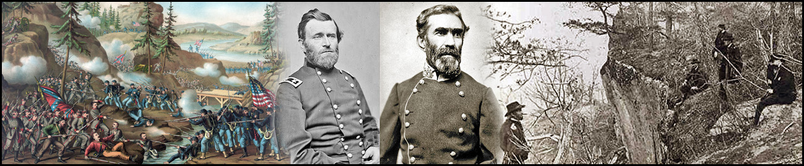
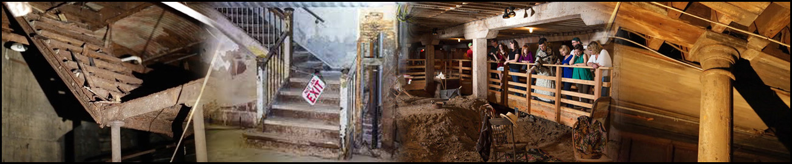
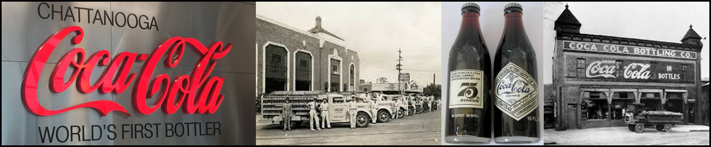

Chattanooga's Rich History
Chattanooga's history is rooted in its strategic location along the Tennessee River, which made it a key trading and transportation hub for Native American tribes, including the Cherokee. The city's modern development began in the early 19th century, following the establishment of a military fort during the Creek War and the arrival of railroads, which helped fuel its industrial growth. Chattanooga played a significant role during the Civil War, with pivotal battles like the Battle of Lookout Mountain and the Battle of Chattanooga, marking it as a key Confederate stronghold.
After the war, the city transitioned into an industrial powerhouse, particularly in iron and steel production, but by the mid-20th century, it struggled with economic decline due to the collapse of its manufacturing base. In the late 20th century, Chattanooga began a remarkable revitalization, focusing on environmental sustainability, high-tech industries, and tourism.
Chattanooga and The Civil War
Chattanooga, Tennessee, played a crucial role in the Civil War due to its strategic location as a major railroad hub and gateway to the Deep South. The city was the site of several significant battles in 1863, as Union forces sought to gain control of its vital transportation routes. The Battle of Chickamauga, fought just south of Chattanooga in September 1863, was a major Confederate victory and one of the bloodiest battles of the war. However, Union forces, led by General Ulysses S. Grant, regrouped and launched a successful campaign to retake the city. In November 1863, the Battles of Lookout Mountain and Missionary Ridge resulted in a decisive Union victory, breaking the Confederate siege of Chattanooga and paving the way for General William Tecumseh Sherman's advance into Georgia.
The Union's victory at Chattanooga marked a turning point in the war, securing control of a critical supply line and opening the door for the Atlanta Campaign. The battles demonstrated the effectiveness of coordinated Union attacks and highlighted the leadership of Grant, who was soon promoted to command all Union armies. Chattanooga itself became a major supply and logistical base for Union forces in the South. The city's capture not only weakened the Confederacy's ability to defend its territory but also boosted Northern morale. Today, the battlefields around Chattanooga, including Chickamauga and Lookout Mountain, are preserved as part of the Chickamauga and Chattanooga National Military Park, honoring the significance of these engagements in shaping the outcome of the Civil War.
The Forgotten Underground of Chattanooga
Beneath the bustling streets of Chattanooga lies a hidden world that dates back to the late 1800s—a forgotten underground that tells the tale of the city’s evolving landscape.
Chattanooga’s underground streets are a fascinating, lesser-known aspect of the city’s history. These subterranean passages were once the city’s main streets, built over due to frequent flooding from the Tennessee River. In the late 19th century, as urban development grew and the city sought to combat flooding, parts of downtown Chattanooga were literally raised, leaving the old roads buried underneath. Next time you’re in Downtown Chattanooga, take a moment to explore and see if you can spot any signs of the city’s hidden underground.
Coca-Cola Bottling’s Historical Roots
Chattanooga was the first city to bottle Coca-Cola, forever changing the way this iconic beverage was distributed worldwide – another fascinating addition to the 5 facts about Chattanooga.
In 1899, two Chattanooga attorneys secured the exclusive rights to bottle Coca-Cola, making it the first soft drink ever sold in bottles. This marked a pivotal moment in both Chattanooga’s and Coca-Cola’s histories, transforming the beverage industry and establishing Chattanooga as a key player in American business.
The city’s role in Coca-Cola’s bottling history is more than just a fun fact; it’s a proud chapter that highlights Chattanooga’s entrepreneurial spirit and its ability to make a lasting impact on the world.
Chattanooga’s connection to Coca-Cola bottling is a source of local pride and identity. It’s a reminder of the city’s historical importance and its contributions to American commerce. It’s one of the 5 facts about Chattanooga that adds a layer of nostalgia and pride, reminding residents that they live in a city shaped by bold moves and historic firsts.
Other Historical Happenings
- Pre-1838: Chattanooga was home to the Cherokee people, including John Ross, the principal chief of the Cherokee Nation.
- 1838: The city played a role in the Trail of Tears, as Ross's Landing (now part of downtown Chattanooga) was a major departure point for the forced relocation of the Cherokee.
- Mid-to-late 1800s: Chattanooga became a major railroad hub, earning the nickname "Gateway to the South."
- 1880: The Chattanooga Choo Choo (made famous in song by Glenn Miller) was first established as a key passenger train route.
- 1970s: Chattanooga took action to clean up its pollution problem, becoming a national leader in environmental revitalization.
- 2010: Chattanooga became the first U.S. city to offer gigabit-speed internet, branding itself as a tech-friendly city.